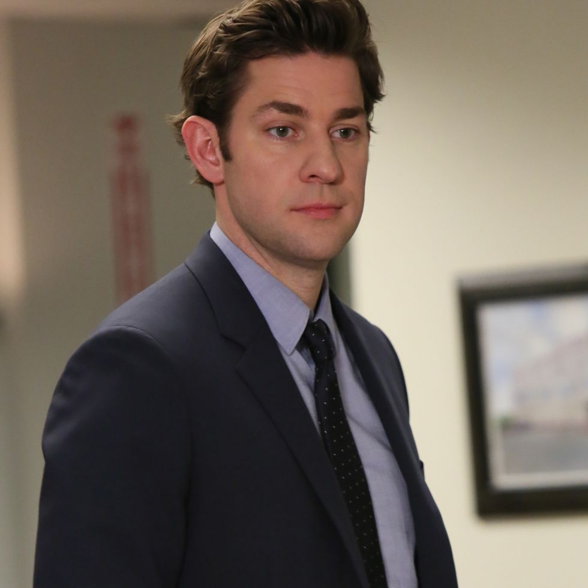

Michael G. Scott, Regional Manager
Portrayed by Steve Carell
Beginning as a salesman, Michael Scott served as Regional Manager of the Scranton branch of Dunder Mifflin. He's resposible for sales, marketing, and logistics for all of Northeastern Pennsylvania and some of the Mid-Atlantic.
He counts Ryan Howard, Jim Halpert, Andy Bernard, and Dwight Schrute as some of his mentees. Born and raised in Scranton, Scott is a comedian, Internet peruser, and screenwriter when he wasn't managing the region. He's married to former employee Holly Flax and is happily in retirement.
Dwight Schrute, Assistant to the Regional Manager et. al.
Portrayed by Rainn Wilson
Assistant to the regional manager who's obsessed with martial arts and has a beet farm on the side. He's always spouting off random facts and is constantly trying to outsmart Jim.

Jim Halpert, Sales
Portrayed by John Krasinski
Jim is the cool salesman who's always pulling pranks on Dwight. He's got a dry sense of
humor and is always trying to make the best of a bad situation. Plus, he's got some serious
chemistry with Pam. One of his most iconic moments is when he dresses up as Dwight for
Halloween, complete with a mustard shirt and a pair of glasses.
Pam Beesley, Receptionist
Portrayed by Jenna Fischer
Pam is the sweet and cute receptionist who's got a bit of a rebellious streak. She's always trying to get out of work and
is secretly in love with Jim. One of her funniest moments is when she tries to impress Jim by wearing glasses, but then realizes
that they're actually for distance vision and she can't see anything up close. She spends the entire day walking around the office
squinting and trying to do her work.
Andy Bernard, Sales
Portrayed by Ed Helms
The overly enthusiastic salesman who's always trying to impress people with his musical skills and Cornell degree. He's got a bit of a temper
and can be pretty annoying at times, but deep down he's a decent guy. Fans will remember the time he punched a hole
in the wall after finding out about Angela and Dwight's affair.

Angela Martin, Accountant
Portrayed by Angela Kinsey
ultra-conservative and super judgmental accountant who's obsessed with cats. She's always giving people the stink-eye and has some serious beef
with her arch-nemesis, Pam. One time, Angela heroically threw a cat into the ceiling tiles to get it to safety.
Creed Bratton, Quality Assurance
Portrayed by Creed Bratton
Creed is an ultimate oddball. He's the quality assurance guy who's always saying cryptic and bizarre things. Nobody knows anything about his past
and he seems to be involved in some shady business dealings. Creed mysteriously came up to work one day covered in blood,
claiming that he's been mugged, but nobody believes him.
Darryl Philbin, Warehouse Foreman
Portrayed by Craig Robinson
Darryl is the chill and laid-back warehouse foreman with quick wit. He's constantly giving Michael a hard time and has a bit of a crush on Kelly.
Kevin Malone, Accountant
Portrayed by Brian Maumgartner
A mistake plus eleven gets you home by seven! A lovable but goofy accountant who's always eating something. He's got a heart of gold and is
willing to lend a helping hand. A memorable moments is when he spills a giant pot of chili all over the office floor and then
tries to scoop it back into the pot.
Meredith Palmer, Supplier Relations
Portrayed by Kate Flannery
Meredith is a tough and sassy supplier relations representative who's always drinking on the job. She's got a bit of a wild side and is definitely not
afraid to speak her mind. Never forget the time Meredith inspired the race for the cure.... for rabies.
Oscar Martinez, Accountant
Portrayed by Oscar Nunez
Oscar is often the voice of reason in the office and needs to stay on his toes to keep Michael in check.
Oscar is known for coming out as openly gay after keeping it hidden for the first few seasons.
Phyllis Vance, Sales
Portrayed by Phyllis Smith
Phyllis is a sweet saleswoman who knits and shares baked goodies for the office. She's got a bit of a sassy side,
though, and isn't afraid to stand up for herself when she needs to. There was a time when she blackmails
Angela into letting her plan the office Christmas party by threatening to reveal her affair with Dwight. Despite her kind and
nurturing nature, Phyllis is not one to be messed with.
Ryan Howard, Temp
Portrayed by B.J. Novak
Ryan started the fire! starts off as the temp at Dunder Mifflin before working his way up the ranks to become a full-fledged
employee, then later a corporate executive. Ryan is portrayed as a bit of a hipster and a know-it-all, often spouting off
pretentious comments and ideas. He also has a tumultuous relationship with Kelly Kapoor, and their on-again, off-again romance
is a running subplot throughout the series. Despite his flaws, Ryan is a complex character who undergoes significant growth and
change throughout the series.
Toby Flenderson, HR
Portrayed by Paul Lieberstein
Toby is a mild-mannered and unassuming HR representative at Dunder Mifflin. Toby is often the target of Michael's ridicule and
disdain, but he takes it all in stride and tries to be a calming presence in the office. He's a bit of a rule-follower, which can
sometimes cause tension with his coworkers, but he genuinely wants to make sure everyone is following the company's policies and
procedures. A popular fan theory was that Toby was actually the Scranton Strangler.